Artículos y páginas básicas
Se explican a continuación los tipos de contenido páginas básicas y artículos y sus opciones de creación.
En Drupal existen dos tipos principales de contenido:
- las páginas básicas son páginas "permanentes", que generalmente están siempre a disposición del visitante y a los que se accede mediante los menús de la página principal. Serían equivalentes a las Páginas de WordPress.
- los artículos son páginas "temporales", que se muestran en la página principal hasta que nuevos artículos les hacen perder vigencia, aunque siguen accesibles. Serían equivalente a las Entradas de WordPress.
Cada vez que se crea un artículo o una página básica, Drupal le asigna un número de nodo que lo identifica y permite acceder a él directamente.
- Entre en Drupal como usuario administrador:
- Haga clic en el enlace Agregar contenido:
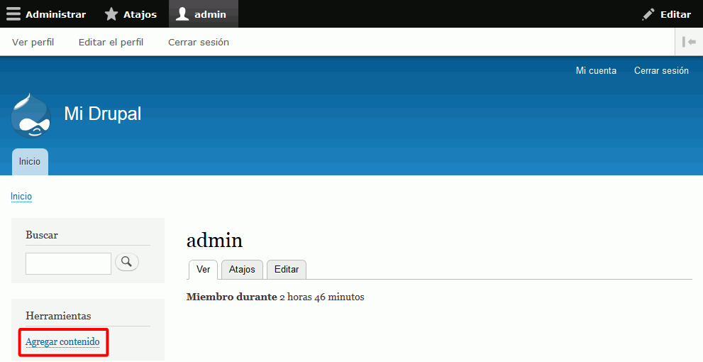
- En la pantalla de Agregar contenido, se puede elegir crear un artículo o un página básica:
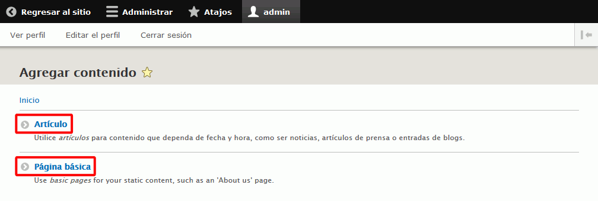
Crear artículos
- Haga clic en Artículo para crear un artículo.
- Los campos que hay que rellenar son los siguientes:
- Título
El título se mostrará junto con el artículo.
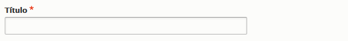
- Texto del artículo y Formato de texto
El texto del artículo puede incluir etiquetas HTML, pero se debe elegir entre:
- HTML Restringido: Sólo se permiten unas pocas etiquetas, que además debe escribir el propio usuario
- HTML Básico: Sólo se permiten unas pocas etiquetas, pero una barra de herramientas evita tener que escribirlas.
- HTML Completo: Texto html, permitiéndose cualquier etiqueta.
Si se incluyen etiquetas html no permitidas en el formato de texto elegido, Drupal filtra esas etiquetas html y no se muestran al visitante. Las etiquetas permitidas en cada tipo de formato de texto se puede modificar.
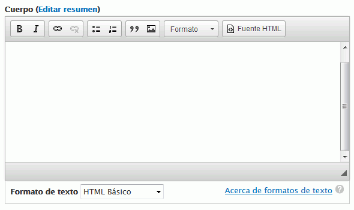
- Etiquetas (tags)
Las etiquetas son palabras (o grupos de palabras) que describen el contenido del artículo. Drupal permite recuperar todos los artículos a los que se ha asignado una determinada etiqueta.
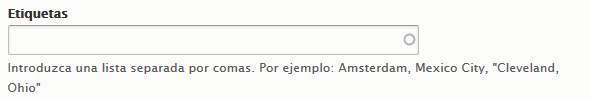
- Imagen
La imagen subida se mostrará al principio del artículo.
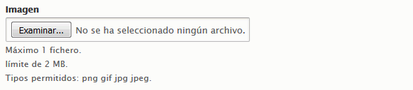
- Guardar
Los artículos se pueden guardar y publicar inmediatamente en la página web o mantenerlos sin publicar en estado de borrador.
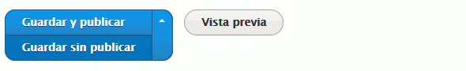
- Título
- En la parte derecha se encuentran opciones adicionales:
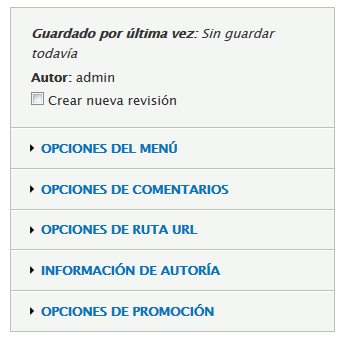
- Crear nueva revisión:
Al marcar la casilla de verificación se muestra el cuadro de texto para escribir una breve descripción de los cambios realizados en el artículo.
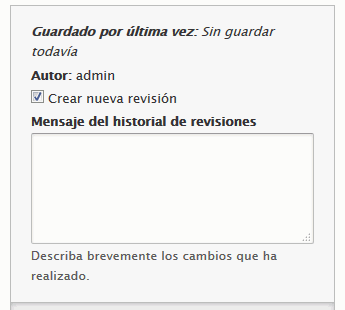
- Opciones del menú
Al marcar esta casilla de verificación se muestran las opciones que permiten definir una opción de menú que enlace directamente con el artículo, pero normalmente los artículos no se suelen vincular con menús.
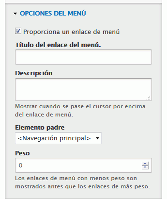
- Opciones de comentario

- Opciones de ruta URL
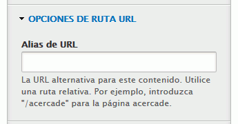
- Información de autoría
Como los artículos se muestran por orden cronológico inverso, una forma sencilla de reordenar artículos es modificar la fecha y hora de creación.
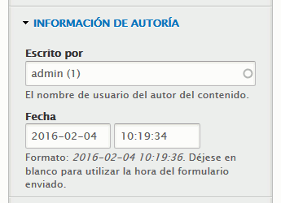
- Opciones de promoción
Las opciones disponibles son:
- Promovido a la portada: Si no se marca esta casilla de verificación, los artículos publicados no aparecerán en la página principal, aunque será accesible por otros procedimientos (etiquetas, número de nodo, etc.)
- Fijo al comienzo de las listas: Si se marca esta casilla de verificación, el artículo no se verá desplazado por nuevos artículos que se publiquen posteriormente. Si hay varios artículos marcados como fijos al comienzo de las listas, estos se muestran en orden cronológico inverso.
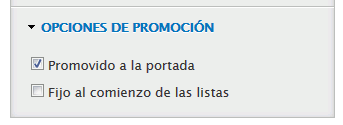
- Crear nueva revisión:
Crear páginas básicas
- Haga clic en Página básica para crear una página básica. Los campos son los mismos que en los artículos, excepto que no existen los campos de etiquetas ni de comentarios.